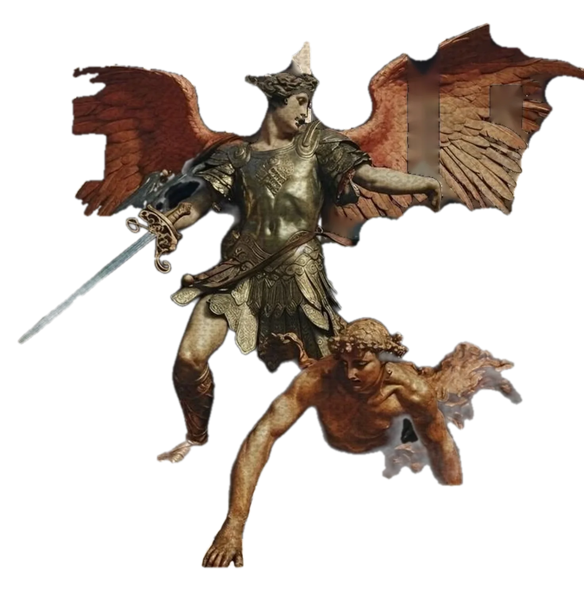
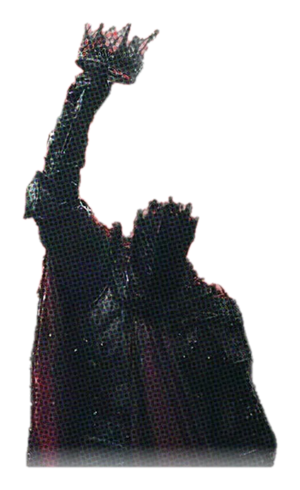
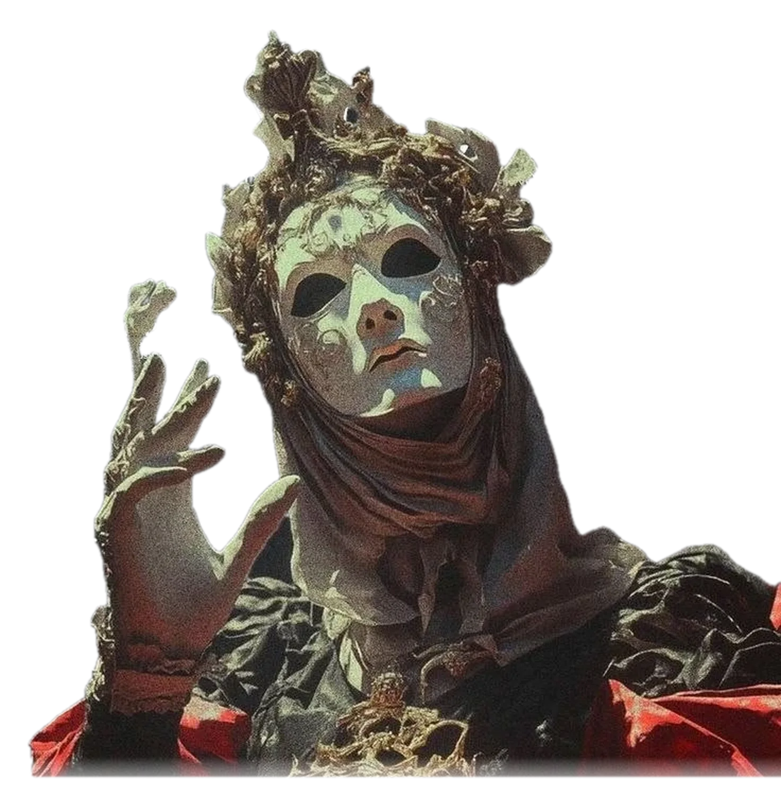
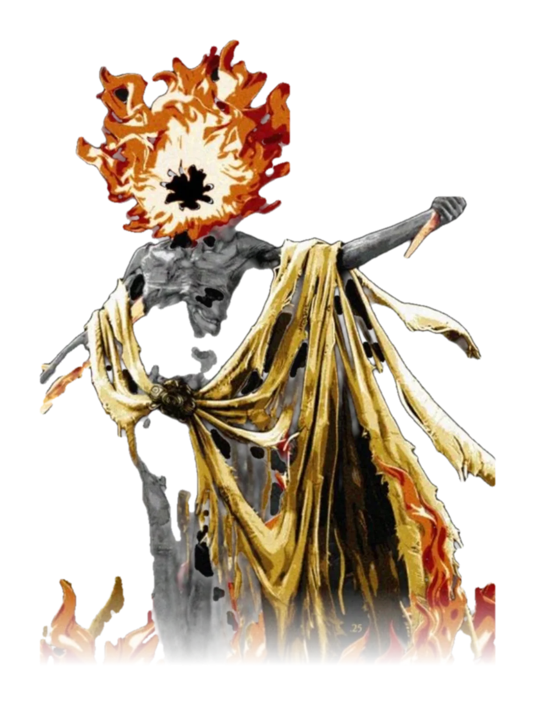
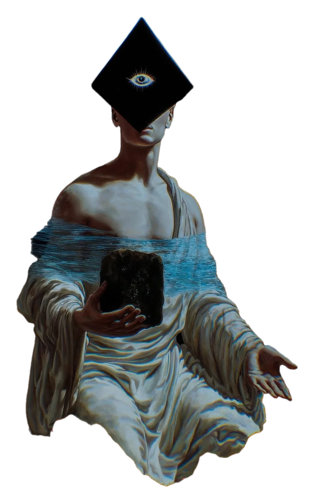

Work I
OpenBook
NotebookLM clone · RAG document Q&A
Six Spring Boot microservices for RAG Q&A (pgvector + LLaMA 3.3 70B): 1,000+ docs at p95 <3s, RabbitMQ events, 15-min podcasts, Stripe.
- Java
- Spring Boot
- pgvector
- RabbitMQ
- MinIO

a body of systems concerning the services, data flows, and pipelines behind a working product. Built on a Fortune 500 team, contributed to open source, and published in research, though the scholar remains early in the journey, as the more critical engineers would note.

NotebookLM clone · RAG document Q&A
Six Spring Boot microservices for RAG Q&A (pgvector + LLaMA 3.3 70B): 1,000+ docs at p95 <3s, RabbitMQ events, 15-min podcasts, Stripe.
AI career toolkit · deployed SaaS
Used by 200+ people: GitHub analysis, ATS résumés and live job matching over 5,000+ listings at sub-2s. JWT + OAuth2, Stripe. techgenie.cc
Multi-agent AI system
A 12-agent LangGraph orchestration with ChromaDB memory and BYOK across 9 LLM providers: 500+ multi-step tasks at 95% completion, 150+ documents generated.
Evidence-backed wildfire analysis
Draw an area, ask a question, get a cited answer from satellite imagery and official sources for San Bernardino County.

Software Engineering Intern · Fortune 500 · Jun–Jul 2026
A C# / .NET integration replacing SnapLogic for 10K+ invoices, POs and transactions a month. DB2 validation across 3 databases fixed 500+ records; a 12-orchestration JD Edwards redesign saved 6 hrs/wk; Azure DevOps CI/CD saved ~5 hrs/wk of QA.
Undergraduate Research Assistant · 2025–2026
Benchmarked VGG16, ViT, ChatGPT and Claude on 12,000+ images across 4 classes, scored with IoU and accuracy; the top model hit 92%.
Research Assistant · Honolulu · May–Jul 2024
Python pipelines over 5K+ TikTok posts, holding 99% consistency across 4 sources and cutting ~10 hrs/wk of manual review.

Notte · 1K+★ · prefix-based model validation for LLM provider integration
Hermes Agent · Nous Research · Semantic Scholar skill covering 9 endpoint types
JavaScript Mastery Pro · 20K★ · fixed an unresolved Mongoose promise (merged)
Google Scholar ↗California State University, San Bernardino · B.S. Computer Science & Mathematics · GPA 3.4 · expected Spring 2028

I'm looking for software engineering internships and new-grad roles, and I'm always happy to chat. Email or LinkedIn is the easiest way to reach me.
Computer Science & Mathematics at CSU San Bernardino (GPA 3.4, Spring 2028). Software Engineering Intern at Murphy USA (Fortune 500), open-source contributor, and co-author on published research. samiul27a@gmail.com
View my workRésuméGitHubFull classic site →